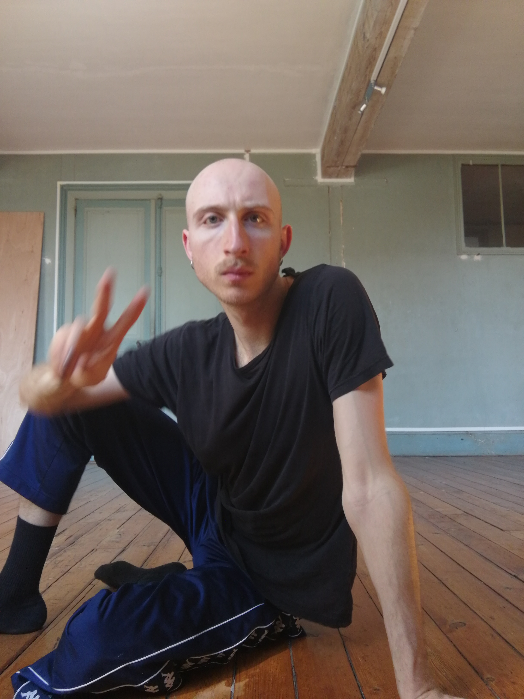

ˏˋ°•*⁀➷ I'm Val·entin
Aubois-Liogier
I'm an artist and researcher (Ph.D.) based in Paris. Born in 1996, I'm exploring since then the joy and despair of life.
My work explores socioecological and sociosensory transformations of inhabited spaces (with a focus on the domestic and urban ones), engaging with the banal, the liminal and the abject. This by crossing disciplines and media: performing, designing, writing short texts and poetry, dancing and creating installations. The medium is chosen for expression as much as the medium chose me. Langage and movement are at core in this decision. I worked with several institutions and collectives in Europe, mostly in France and Belgium.
I did a funded practice-based PhD (2021-2026) in Design and Urban planning at CITERES lab (University of Tours) to study the perception on changes in perception and representation in relation with new systems for recycling human urine in agriculture. This research was indeed led with trans/undisciplinarity through design and art practices to engage with and deepen the understanding of the subject.
This work follows several Master's degrees in Design (Product Design (2018), Teaching (2020) and Research (2021)) from ESDMAA and ENS Paris-Saclay, as well as professional experiences as a product and spatial designer, porcelain craftman, visual artist and art mediator.
Coming from a design background and performing since my study years, I was trained in contemporary dance and performance through professionnal workshops, including Loïc Touzé, Cindy Van Acker, Thomas Hauert, Agniete Lisickinaite, Volmir Cordeiro and François Chaignaud. This drive for dance comes initally from jazz music but has broaden since then to diverse forms of moving. Dance nurtures the way I approach performance art and vice versa.
I'm also teaching since 2021 in design, urban planning and art for higher education programmes. In 2020, I passed the French Agrégation competitive examination for teaching in higher education in Design and Fine Crafmanships. My teaching experience includes being an associate professor, a lecturer, a full time teacher, and organising workshops, in particular at Polytech Tours (University of Tours), University Jean Monet Lyon 3, University Le Mans, University Paris 8, and École Boulle.
I'm also part of several associations, among Design en Recherche, ARCEAU Île-de-France (source separation workgroup) Centre des archives LGBTQI+ Paris et Île-de-France (oral archives workgroup), and Non Fiction.
